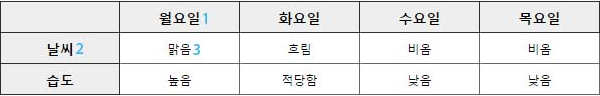
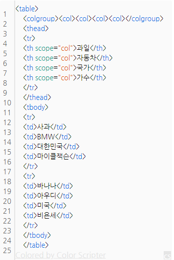

HTML Reference
HTML
HTML(HyperText Markup Language)은 웹 페이지를 만들기 위한 언어입니다.
- HT = HyperText : 문서와 문서를 연결
- M = Markup : 마크업, 태그
- L = Language : 언어
- HTML이란? 문서와 문서로 연결된 태그 언어를 말합니다.
태그(Tag)
태그는 정보를 정의하는 방식을 의미합니다.
- 태그는 열린태그와 닫는태그가 있습니다.
- 닫는 태그에는 "/" 있어야 합니다.
- 닫는 태그가 필요없는 것도 있습니다.(<br>,<hr>,<img>,<input>,<meta>)
- HTML5에서는 "/"가 생략이 가능합니다.
블록 요소/인라인 요소(Block/Inline)
블록 요소는 박스, 인라인 요소는 텍스트를 의미합니다.
- 블록 엘리먼트(Block Element)
- 독립된 박스 영역으로, 한 줄에 하나에 블록 요소만 포현 할 수 있습니다.
- 블록요소에는 블록요소 인라인 요소를 포함 할 수 있습니다.
- <div>, <p>, <,h1>~<h6>, <ul>, <li>
- 인라인 엘리먼트(Inline Element)
- 독립된 텍스트 영역으로, 한 줄에 여러개의 인라인 요소를 표현 할 수 있습니다.
- 인라인 요소에는 블록 요소가 포함 될 수 없지만, 인라인 요소는 포함 할 수 있습니다.
- <span>, <a>, <strong>, <em>, <img>

DTD(Document Type Declaration) 선언
- 독타입을 설정하지 않거나 잘못 설정하면 브라우저에 따라 화면이 다르게 나오거나 렌더링이 달라지기 때문에 독타입을 설정해야 합니다.
<!-- html5 --> <!DOCTYPE html> <!-- HTML 4.01 Strict --> <!DOCTYPE HTML PUBLIC "-//W3C//DTD HTML 4.01//EN" "http://www.w3.org/TR/html4/strict.dtd"> <!-- HTML 4.01 Transitional --> <!DOCTYPE HTML PUBLIC "-//W3C//DTD HTML 4.01 Transitional//EN" "http://www.w3.org/TR/html4/loose.dtd"> <!-- HTML 4.01 Frameset --> <!DOCTYPE HTML PUBLIC "-//W3C//DTD HTML 4.01 Frameset//EN" "http://www.w3.org/TR/html4/frameset.dtd"> <!-- XHTML 1.0 Strict --> <!DOCTYPE html PUBLIC "-//W3C//DTD XHTML 1.0 Strict//EN" "http://www.w3.org/TR/xhtml1/DTD/xhtml1-strict.dtd"> <!-- XHTML 1.0 Transitional --> <!DOCTYPE html PUBLIC "-//W3C//DTD XHTML 1.0 Transitional//EN" "http://www.w3.org/TR/xhtml1/DTD/xhtml1-transitional.dtd"> <!-- XHTML 1.0 Frameset --> <!DOCTYPE html PUBLIC "-//W3C//DTD XHTML 1.0 Frameset//EN" "http://www.w3.org/TR/xhtml1/DTD/xhtml1-frameset.dtd">
언어 속성 설정
<!-- HTML5 --> <html lang="ko"> <!-- HTML4 --> <html lang="ko" xml:lang="ko" xmlns= "http://www.w3.org/1999/xhtml">
문서 정보 설정
<!-- HTML5 언어설정 --> <meta charset="UTF-8"> <!-- HTML4 언어설정 --> <meta http-equiv="Content-Language" content="text/html; charset=UTF-8"> <!-- 웹 문서에 대한 제작자 설정 --> <meta name="author" content="qweryop"> <!-- 웹 문서에 대한 설명 설정 --> <meta name="description" content="사이트 설명"> <!-- 웹 문서에 대한 키워드 설정 --> <meta name="keywords" content="키워드">
HTML Description
<html>
HTML 문서의 최상위 루트를 나타냅니다.
<head>
HTML 문서의 헤더 요소를 정의하는 영역입니다.
<body>
HTML 문서의 본문에 해당하는 콘텐츠를 정의하는 영역입니다.
<meta>
문서에 대한 정보를 제공합니다.
<link>
문서를 외부 파일과 연결합니다.
<title>
문서의 제목을 설정합니다.
<h1>~<h6>
H1은 가장 큰제목을 쓸 때, H2는 그 다음 큰 제목, H6는 가장 적은 제목을 쓸 때 필요한 태그입니다.
<p>
Paragraph 약자로 문단을 정의합니다.
<ul>
Unordered list의 약자로 순서가 없는 목록을 정의합니다.
<li>
list의 약자로, 목록의 항목을 정의합니다.
<a>
하이퍼 링크를 정의합니다.
- href : 링크로 이동하는 경로를 설정합니다.
- target : 브라우저의 타겟을 설정합니다.
- <a target="_blank"></a>링크 클릭시 새로운 브라우저 창으로 설정합니다.
- <a target="_parent"></a> 현재 브라우저의 부모 브라우저 창으로 설정합니다. 부모가 없는 경우 _self와 동일합니다.
- <a target="_self"></a> : 현재와 동일한 브라우저 창으로 설정합니다.
- <a target="_top"></a>: 최상위 브라우저 창에서 설정합니다. 부모가 없는 경우 _self와 동일합니다.
- 방문하지 않은 링크는 밑줄과 파란색으로 표시됩니다.
- 방문한 링크는 밑줄과 보라색으로 표시됩니다.
- 활성화된 링크는 밑줄과 빨간색으로 표시됩니다.
- <a> 태그는 예외적으로 HTML5에서 블록요소를 포함할 수 있습니다.
strong
글자에 강조 효과를 줄 수 있으며, bold 체로 보여집니다.
em
중요한 문구를 강조하는 태그, 글자가 기울임체로 표현됩니다.
span
문장단위로 텍스트 영역을 지정하는것인데, 그자체로 아무 역할도 하지 않고, 문장의 특정 구역에 CSS스타일을 지정할 때 사용합니다.
div
레이아웃을 나누는데 주로 쓰입니다.
address
연락처 정보를 제공하기 위해 사용됩니다.
hr
블로그나 웹페이지에 가로줄을 넣는 태그입니다.
br
줄바꿈 태그입니다.
table
HTML 문서에서 표를 만드는 태그입니다.
- 테이블 요소들은 레이아웃이 아닌 도표의 의미가 필요할 때에만 사용
- 테이블 요소들은 table 요소안에 포함
- tr은 행, td는 셀
- tr이 먼저 만들어지고, 그안에 td가 들어가는 방식
- 헤더, 제목이 되느 셀은 th 사용
- colspan속성은 열 병합, rowspan 속성은 행 병합
- 셀 병합을 할 경우, 병합된 개수 만큼의 셀은 뺄 것
input
사용자가 데이터를 입력할 수 있는 입력 영역을 지정하는 태그입니다.
- email : 이메일 주소 검증 창을 만든다.
- search : 검색창을 만든다. text 속성과 동일하다.
- url : URL 입력 형식을 검증하는 창을 만든다.
- tel : 전화번호 입력창을 만들며 검증 하지 않는다.
- number : 숫자만 입력할 수 있는 창을 만들며 범위 제한을 둘 수 있다.
- range : 슬라이드 컨트롤을 만든다.
- date : 납짜 입력창을 만든다.
- color : 색상을 선택할 수 있는 창을 만든다.
legend
필드셋에 제목을 달아주는 태그입니다.
fieldset
웹 폼 내에서 label과 같은 여러 컨트롤을 그룹화 하는데 사용됩니다.
- disabled : 해당하는 그룹을 모두 disable 할 수있음
- form : 원하는 form을 선택할 수 있음
- name : 원하는 name 속성을 선택할 수 있음
form
웹 페이지에서의 입력 양식을 의미합니다. (로그인 창, 회원가입 폼등)
- action: 폼을 전송할 URL을 입력합니다.
시멘틱 태그
section
- 콘텐츠와 관련된 한 가지 주제 영역을 말합니다.
- section 요소는 문장이나 문서의 스타일링 요소가 아니기 때문에 편의나 영역을 위함이면 div 태그가 좋습니다.
- section 요소는 제목이 없는 경우는 섹션이라고 할 수 없기 때문에 제목을 제공해야 합니다.
- section 요소는 일반적인 주제가 아니라면 구체적인 요소(article,aside,nav)를 사용하는 것이 더 적절합니다.
article
- article는 포럼, 신문기사, 잡지, 블러그 항목, 게시판 글 등은 콘텐츠의 독립적인 항목을 나타냅니다.
- section은 하나의 주제를 나타낸다면, article은 주제를 묶은 독립적인 콘텐츠입니다./
- section 요소 안에는 article 요소를 쓸 수 있으며, article 요소 안에도 section 요소를 쓸 수 있습니다.
nav
- nav는 문서의 핵식점인 페이지의 메뉴 및 서브메뉴에서 사용하고, 문서에서 주로 한 번 사용합니다.
- 문서 안에 링크가 포함된 콘텐츠는 nav를 사용하지 않습니다.
- nav는 핵심적인 네비게이션에 사용해야 하므로, 푸터 내에 링크 그룹의 사용은 적절하지 않습니다.
main
- main는 웹 페이지에서 한 번만 사용할 수 있으며, 접근성과 검색 영역에 노출을 향상시킵니다.
- article, aside, footer, header, nav를 하위 요소로 사용 할 수 있습니다.
aside
- aside는 메인 콘텐츠와 관련된 사이트의 정보, 광고 등 부분적인 정보를 그룹화할 때 사용합니다.
header
- 헤더에는 웹 페이지에 대한 소개, 네비게이션 영역, 테이블 영역, 검색영역, 로고영역을 포함한 영역입니다.
- 헤더에는 제목 태그가 포함 될 수 있으며, 필수 조건은 아닙니다.
- header는 섹션 콘텐츠가 아닌 그룹화하기 위한 요소이므로 section 요소를 포함할 수 없습니다.
footer
- footer는 저작권 정보, 회사 정보, 관련 링크, 주소, 바닥글, 사이트 정보 등을 포함하는 콘텐츠 영역입니다.
- footer는 섹션 콘텐츠가 아닌 그룹을 나타내는 요소이며, section, article, aside등을 포함 할 수 있습니다.
HTML5에 새로 생긴 태그
- header : 웹 문서의 헤더 영역을 나타냄.
- footer : 웹 문서의 footer 영역을 나타냄.
- nav : 페이지 내에서 이동할 수 있는 네비게이션 링크 그룹.
- mark : 문서 내용중에서 중요한 부분을 표시해주는 태그.
- progress : 다운로드 진행 상황을 나타내는 진행막대표시 태그.
- article : 뉴스 기사나 블로그 글 같은 독립적인 텐츠를 표시합니다.티스토리의 경우 본문이나 보호글, 공지사항, 방명록 등 한페이지에 보여지는 부분을 넣을 수 있습니다.
- aside : 문서의 주요 부분을 표시하고 남는 사이드바 콘텐츠를 표시합니다.
- bdi : 바깥쪽의 여러 텍스트와 다른 방향으로 서식이 지정된 글의 부분을 구분하기 위해 사용됩니다.
- command : 사용자가 동작시킬 수 있는 명령 버튼을 정의 합니다.
- details : 사용자가 보거나 감출 수 있는 추가적인 상세 사항을 정의 합니다.
- datalist : 사용자가 텍스트 필드에 내용을 입력할 때 선택할 수 있는 값들을 목록으로 보여줍니다.
- summary : <details>요소를 위한 제목을 정의합니다.
- figure : 부가적인 설명글(캡션)이 붙을 일러스트레이션, 다이어그램, 사진, 코드 목록과 같은 컨텐츠를 지정합니다.
- figcaption : <figure>요소에 대한 설명글을 정의합니다.
- hgroup : 문서의 제목부가 여러 단계로 나눠져 있는 경우 <h1>에서 <h6>까지의 요소들을 집합으로 묶습니다.
- meter : 특정 범위내에서 특정한 수치를 나타낼때 사용하는 태그 입니다. 지정된 값은 시각적으로 게이지바 (프로그래스바) 형태로 화면에 나타납니다. 현재 크롬, 오페라 웹브라우저만 이 태그를 지원하고 있습니다.
- ruby : 텍스트위에 주석을 달때 사용하는 태그로서, 일본어나 중국어와 같은 동아시아 문자열을 표현할때 사용합니다.
- rt : <ruby> 요소 하위에 사용되며, 텍스트 윗쪽에 달릴 실제 주석의 내용을 정의합니다.
- rp : <ruby> 문자열 주석 태그를 지원하지 않는 웹브라우저에서 표시될 메시지를 정의합니다.
- section : 문서의 구역을 정의합니다.
- time : 날짜나 시간을 정의합니다.
- wbr : 줄 분리 지점을 정의합니다.
- audio : 사운드 컨텐츠를 정의합니다.
- video : 비디오나 영상을 정의합니다.
- source : <video>나 <audio> 태그 내부에 여러개의 미디어 자원을 지정합니다.
- embed : 외부 프로그램이나 상호 작용적인 컨텐츠를 위한 컨테이너를 정의합니다. (플러그인용)
- track : <video>나 <audio> 요소에 대해 텍스트 형태의 트랙 정보나 자막을 지정해 줍니다.
- canvas : 웹상에 그래픽을 표시합니다. API와 함께 사용해 다양한 애플리케이션을 만들수 있습니다.
- keygen : 양식을 서버로 전송할 때 한 쌍의 키를 만들어 private key는 로컬에 저장하고 public key는 서버에 저장합니다.
- output : 수학적인 계산의 결과값을 표시합니다
HTML5에서 의미가 변한 속성
- s : 더이상 옳지 않은 내용을 나타내는 데에 쓴다. 별도의 CSS 없이 쓰면 브라우저에서는 취소선을 긋는 것이 기본값이다.
- u : 양식상 일반적인 텍스트보다 돋보여야 할때 쓴다. 예를 들어 철자가 틀린 단어나, 중국어로 번역된 고유 명사 등이 있다. 별도의 CSS 없이 쓰면 브라우저에서는 밑줄을 긋는 것이 기본값이다.
- i : 어떠한 이유로 일반적인 텍스트보다 돋보여야 할때 쓴다. 예를 들어 전문 용어, 외국어의 구절 등이 있다. 별도의 CSS 없이 쓰면 브라우저에서는 이탤릭체로 표기하는 것이 기본값이다. 더 적절한 시맨틱 태그가 있을 경우 그쪽을 쓴다.
- hr : 원래 단순한 가로줄을 나타내는 태그였으나, 페이지의 주제가 바뀔 때 내용을 분리시키는 의미가 HTML5에서 추가되었다.
HTML5에서 사라진 요소
- font : CSS가 있기 때문에 폐기되었다. 이미 HTML 4.01에서 비권장으로 분류된 태그였다.
- center : 가운데 정렬용 태그인데 마찬가지로 CSS로 너무나도 간단하게 대체 가능하기에 폐기되었다.
- basefont : 말 그대로 기본 폰트를 지정해 주는 태그였다.
- applet : 자바 애플릿을 넣을 때 쓰는 태그였다. object, embed로 대체한다
- marquee : 익스플로러에서 전광판처럼 글자가 흐르게 하는 테그였다. JavaScript나 CSS3의 Animation으로 대체할 수 있다.
- blink : 넷스케이프와 파이어폭스에서 글자를 깜빡이게 하는 태그였다. 이 역시 JavaScript나 CSS3의 Animation으로 대체할 수 있다.
- bgsound : 배경음악을 재생시키는 태그인데 익스플로러에서만 돌아가는 비표준 태그이다.
table 요소의 웹 표준
- <caption> : 표의 제목을 나타냅니다. 표의 제목 만으로도 표를 쉽게 이해할 수 있게 작성하는 것이 좋습니다. table 요소의 가장 첫 번째 자식으로 와야 합니다.
- summary 속성
- table 요소에 넣는 속성입니다.
- 웹 브라우저에 시각적으로 보이지는 않지만, 스크린 리더로 표를 접근하는 사용자에게 더 많은 설명을 제공합니다.
- 웹 사이트에서 summary을 실질적으로 도움되게 작성하는 경우가 별로 없어, HTML5에서는 이 속성이 사라집니다.
- HTML5에서는 이 summary 속성대신 caption 요소의 내용을 더 이해하기 쉽게 작성하도록 권고하고 있습니다.
- scope 속성
- 해당하는 이 th 요소가 어느 영역의 제목을 뜻하는 지를 정의 해주는 것입니다.
- 테이블의 데이터를 인식하고 읽는 순서를 결정하게 됩니다.
- 속성 값 row : 같은 행에 있는 셀들에 적용됩니다.
- 속성 값 col : 같은 열에 있는 셀들에 적용됩니다.
- 속성 값 rowgroup : 동일한 행 집합에 있는 다른 모든 셀에 적용됩니다. 요소가 행 집합을 가리킬 때에만 사용합니다.
- 속성 값 colgroup : 동일한 열 집합이 있는 다른 모든 셀에 적용됩니다. 요소가 열 집합을 가리킬 때에만 사용합니다.
열제목 열제목 열제목 내용 내용 내용 <table border="1"> <tr> <th scope="col">열제목</th> <th scope="col">열제목</th> <th scope="col">열제목</th> </tr> <tr> <td scope="row">내용</td> <td>내용</td> <td>내용</td> </tr> </table>
- 하나 이상의 열(col)을 그룹 짓는데 사용하는 요소입니다.
- 이 요소는 caption 다음으로 올 수 있습니다.
- <td> 태그의 구조적인 그룹화를 위해서 사용, 소스의 양을 줄일 수 있습니다.
- 열의 제목으로 구성된 행의 집합입니다.
- table 요소에서 한 번만 쓸 수 있으며, tbody나 tfoot보다 먼저 선언되어야 합니다.
- 도표의 본문에 해당하는 영역을 나타냅니다.
- tbody는 thead나 tfoot과 달리 여러 번 선언되어 행을 그룹화 할 수 있습니다.
- 도표 하단에 나오는 열의 요약으로 구성된 행의 집합입니다.
- table 내에 한 번만 쓸 수 있으며, tbody보다 먼저 작성하더라도 표의 맨 마지막에 위치하게 나옵니다.
Table의 scope (col / row)
- scope는 th에 사용하는 속성으로, 제목과 내용을 연결해주는 기능을 갖고 있습니다.
- 예① : 과일에(th) scope="col" 이라고 적용하고 과일이라는 제목셀부터 사과, 바나나 순으로 읽으라는 뜻입니다.
- 예② : 월요일(th)에 scope="col"을 적용하고 날씨(th)에 scope="row"라고 적용하면 월요일 - 날씨 - 맑음 순으로 읽으라는 뜻입니다. 

